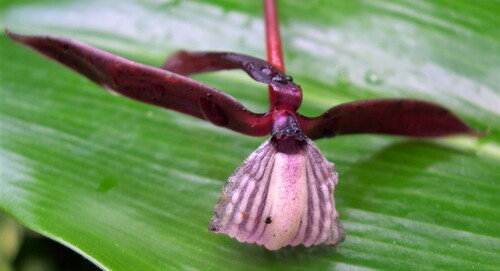

Lowiaceae
(Orchidantha Family)
Lowiaceae is a monogeneric plant family (containing only the genus Orchidantha) belonging to the order Zingiberales within the monocots. It comprises about 15-20 species of perennial, rhizomatous herbs native to the understory of wet tropical forests in Southeast Asia (from southern China to Borneo). They are known for their large, banana-like leaves and unusual, often foul-smelling, orchid-like flowers borne near ground level.
Overview
The Lowiaceae family consists solely of the genus Orchidantha. These herbaceous perennials grow from underground rhizomes in the shaded, humid understory of tropical rainforests, often near streams or in swampy areas. They lack aerial stems, with large leaves arising directly from the rhizome. Their distribution is restricted to Southeast Asia.
The most striking feature of Lowiaceae is their flowers, which emerge from the rhizome at or near ground level. These flowers are highly modified, bilaterally symmetrical (zygomorphic), and bear a superficial resemblance to orchids (hence the genus name Orchidantha, meaning "orchid flower"). The flowers are often pale or purplish and frequently emit unpleasant odors, suggesting pollination by flies attracted to carrion or dung (sapromyophily), although bat pollination has also been suggested for some species. The family is closely related to other members of the Zingiberales order, such as bananas, gingers, and heliconias.
Quick Facts
- Scientific Name: Lowiaceae
- Common Name: Orchidantha Family
- Number of Genera: 1 (Orchidantha)
- Number of Species: Approximately 15-20
- Distribution: Southeast Asia (S. China to Borneo); wet tropical forest understory.
- Evolutionary Group: Monocots - Commelinids - Zingiberales
Key Characteristics
Growth Form and Habit
Perennial, acaulescent (stemless) herbs growing from an underground rhizome. Leaves and inflorescences arise directly from the rhizome.
Leaves
Leaves are large, simple, and entire, resembling those of bananas or gingers. They consist of a distinct petiole and a large blade with a prominent midrib and numerous parallel side veins arranged somewhat pinnately (a characteristic monocot feature). Leaves are arranged spirally or distichously (in two ranks) from the rhizome.
Inflorescence
Inflorescences arise directly from the rhizome at or near ground level (radical inflorescence). They are typically short, consisting of few-flowered cymes or sometimes solitary flowers, subtended by bracts.
Flowers
Flowers are highly specialized, zygomorphic (bilaterally symmetrical), bisexual, and based on a 3-merous plan (typical for monocots). They often have an unusual appearance and sometimes a foul odor:
- Perianth: Differentiated into two distinct whorls (calyx and corolla).
- Outer whorl (sepals): 3 sepals, usually free, often greenish or brownish.
- Inner whorl (petals): 3 petals, highly modified. The median (upper/adaxial) petal is greatly enlarged, forming a conspicuous lip or labellum, which is often complex in shape and may be white, yellow, or purplish. The two lateral petals are typically very small, sometimes reduced to scales or bristles.
- Androecium: 5 fertile stamens; the sixth (posterior/adaxial) stamen, which would be opposite the labellum, is absent or reduced to a sterile staminode. Filaments are short and may be fused to the base of the style or petals. Anthers are basifixed.
- Gynoecium: The ovary is inferior, composed of 3 fused carpels forming 3 locules. Placentation is axile, with numerous ovules in each locule. The style is single, often complex or stout, sometimes bearing petaloid appendages, and terminates in a 3-lobed stigma.
Fruits and Seeds
The fruit is a 3-valved, loculicidal capsule (splitting open along the middle of each locule), containing numerous seeds. The seeds are often angled and may possess a small, fleshy appendage called an aril.
Field Identification
Identifying Lowiaceae relies on recognizing its monocot features, unique flowering habit, and specialized flower structure within its specific habitat and range:
Primary Identification Features
- Rhizomatous herb habit: Stemless perennial herbs with leaves arising from an underground rhizome.
- Large, banana/ginger-like leaves: Distinct petiole and blade with pinnate-parallel venation (monocot feature).
- Flowers borne near ground level: Inflorescences emerge directly from the rhizome, often hidden in leaf litter.
- Zygomorphic, orchid-like flowers: Highly asymmetrical flowers with 3 sepals and 3 highly differentiated petals.
- Prominent labellum: One petal (the median one) is much larger and modified into a lip.
- 5 fertile stamens: Distinctive number of stamens (posterior one missing/sterile).
- Inferior ovary: Ovary located below the attachment of perianth parts.
- Habitat and Range: Wet tropical forest understory in Southeast Asia.
Secondary Identification Features
- Foul flower odor (often): Many species smell unpleasant, attracting fly pollinators.
- Capsule fruit: Look for 3-valved capsules near the ground.
Seasonal Identification Tips
- Flowering Season: Can occur year-round in suitable tropical conditions, but may be more prevalent during certain periods. Flowers are essential for identification but can be hard to spot near the ground.
- Fruiting Season: Capsules develop after flowering near ground level.
- Vegetative Season: The large, distinctive leaves are present year-round.
Common Confusion Points
While the flowers are unique, the leaves can resemble other Zingiberales:
- Zingiberaceae (Ginger Family): Also rhizomatous herbs with large leaves, but flowers usually have only 1 fertile stamen (others are petaloid staminodes), a distinct floral structure (often with showy bracts), and aromatic rhizomes/leaves. Flowers typically borne on aerial shoots or separate basal shoots, but usually not as hidden at ground level.
- Musaceae (Banana Family): Much larger plants, typically with pseudostems formed by rolled leaf sheaths, and large pendant or erect inflorescences with massive bracts.
- Marantaceae (Prayer Plant Family): Leaves often have a distinct pulvinus (swelling) at the top of the petiole allowing leaf movement. Flowers are complex, asymmetrical, but structurally different (e.g., often only 1 fertile stamen, different petal/staminode arrangement).
- Orchidaceae (Orchid Family): While flowers are superficially similar (zygomorphic, labellum), orchids have a highly specialized structure (column fusing stamens and style, pollen aggregated into pollinia, typically 1 or 2 fertile stamens), and vastly different vegetative forms (often epiphytic).
Field Guide Quick Reference
Look For:
- Rhizomatous herb (Monocot)
- Large banana/ginger-like leaves
- Flowers emerging near ground level
- Zygomorphic flowers
- Large median petal (labellum)
- 2 very small lateral petals
- 5 fertile stamens
- Inferior ovary
- Capsule fruit
- SE Asia rainforest understory
Key Variations:
- (Monogeneric family - variations between species)
- Labellum shape and color
- Flower size and odor
- Leaf size
Notable Examples
The family contains only the genus Orchidantha:

Orchidantha spp.
(Orchidantha)
The sole genus in the Lowiaceae family, comprising about 15-20 species of rhizomatous herbs native to Southeast Asia. They are characterized by large leaves resembling bananas or gingers, and highly modified, zygomorphic flowers borne near the ground. The median petal forms a prominent labellum, and there are 5 fertile stamens. They typically inhabit the damp, shaded understory of tropical forests.

Orchidantha maxillarioides
(Specific Orchidantha species)
A representative species from the Malay Peninsula, known for its distinctive flower structure where the labellum somewhat resembles the jaw (maxilla) shape suggested by the specific epithet. Like other members of the genus, it grows in wet forest understories and flowers near the ground.
Phylogeny and Classification
Lowiaceae is placed within the order Zingiberales, a well-defined and easily recognizable group within the Commelinid clade of Monocots. This order is characterized by its members typically being large rhizomatous herbs with distinct petioles and blades, pinnate-parallel venation, flowers with inferior ovaries, and often showy bracts or perianth parts.
Within Zingiberales, Lowiaceae represents one of the smaller, early-diverging lineages. Molecular studies place it as sister to the family Strelitziaceae (bird-of-paradise flower family). Together, these two families form a clade that is sister to the grouping of Heliconiaceae and Musaceae (banana family). The entire order Zingiberales is known for rapid diversification and the evolution of specialized pollination mechanisms (birds, bats, insects).
Position in Plant Phylogeny
- Kingdom: Plantae
- Clade: Angiosperms (Flowering plants)
- Clade: Monocots
- Clade: Commelinids
- Order: Zingiberales
- Family: Lowiaceae
Evolutionary Significance
Lowiaceae, though small, is significant for understanding the evolution of the Zingiberales:
- Early lineage: Represents one of the earlier branches within the order, providing insights into ancestral traits.
- Floral specialization: The highly modified, orchid-like flower with its unique labellum and stamen number (5 fertile) showcases evolutionary experimentation within the basic 3-merous monocot plan.
- Pollination biology: The shift towards ground-level flowering and likely fly (or possibly bat) pollination contrasts with the more common bird or bee pollination syndromes seen in other Zingiberales.
- Biogeography: Its restricted Southeast Asian distribution contributes to understanding the origins and dispersal history of the Zingiberales order.